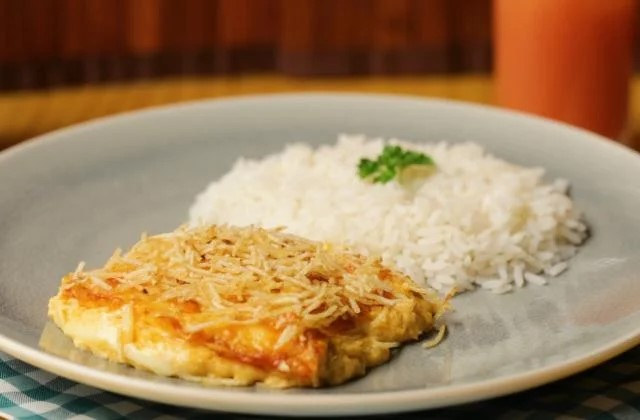
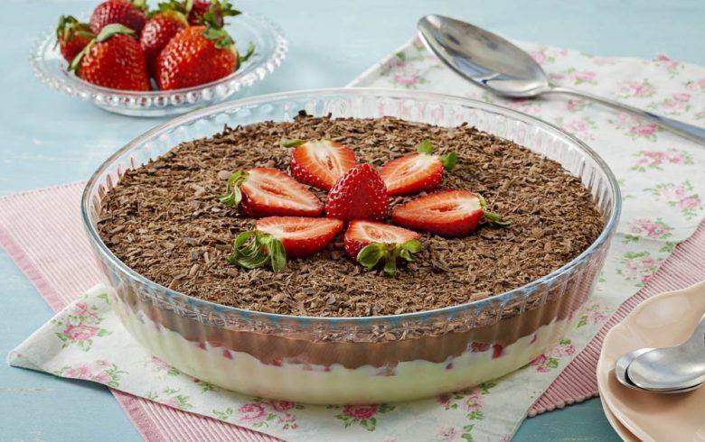
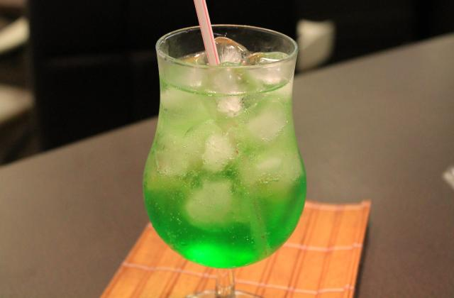

FRICASSÊ DE FRANGO
Ingredientes:
1 caixa de creme de leite,
1 lata de milho verde,
1 copo de requeijão
100g de azeitona (sem caroço),
2 peitos de frango (desfiados),
200g de mussarela,
100g de batata palha,
1 xícara de água e
1 pitada de sal.
Modo de Preparo:
Bata no liquidificador o milho, o requeijão, o creme de leite e a água;
Refogue o creme do liquidificador com o frango desfiado, as azeitonas e o sal até ficar com uma textura espessa;
Coloque o refogado numa assadeira, cubra com mussarela e espalhe a batata palha por cima;
Leve ao forno até borbulhar.
BOMBOM DE TRAVESSA
Ingredientes
250 g de chocolate ao leite,
250 g de chocolate meio amargo,
2 latas de leite condensado,
2 latas de creme de leite,
2 colheres de margarina e
2 caixas de morango.
Modo de Preparo
Coloque as latas de leite condensado em uma panela com a manteiga e faça uma massa como um brigadeiro mole;
Coloque em uma travessa e, por cima deste brigadeiro mole, coloque os morangos cortados ao meio e reserve;
Para fazer a cobertura, rale o chocolate ao leite e o meio amargo e misture ao creme de leite;
Após misturar, coloque no micro-ondas durante 1 minuto, depois retire, mexa e volte ao micro-ondas por mais 1 minuto;
Despeje a cobertura por cima dos morangos e leve à geladeira coberta por papel-filme.
SODA ITALIANA DE MAÇÃ VERDE
INGREDIENTES
50 ml xarope de maçã verde,
4 cubos de gelo e
Água com gás a gosto.
Modo de Preparo
Coloque o xarope de maçã verde em um copo;
Adicione os cubos de gelo;
Adicione a água com gás até completar o copo.